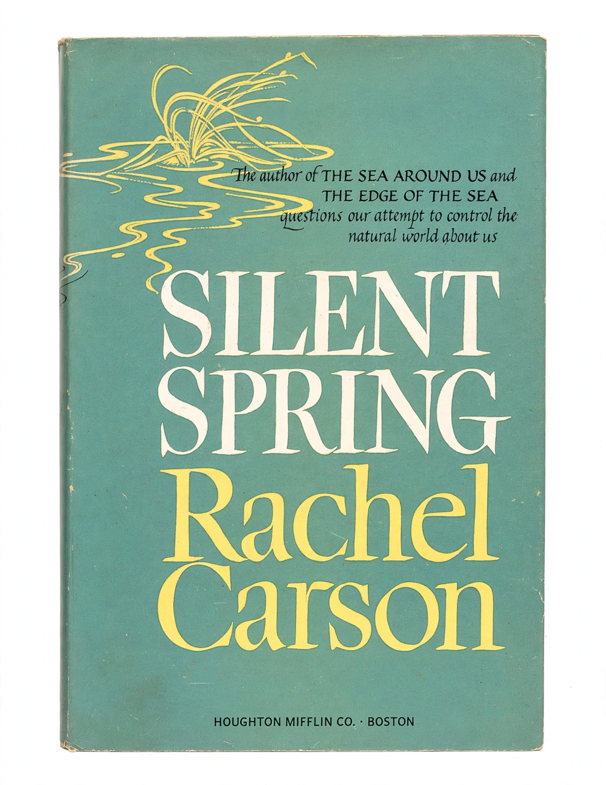

Silent Spring

Silent Spring is a book by Rachel Carson published on 27 September 1962, which documented the damage done to wildlife and ecosystems by the indiscriminate use of synthetic pesticides, above all DDT, and exposed how the chemical industry and complaisant regulators had misled the public about the risks.
It is routinely ranked among the most influential books of the 20th century: within a decade it had helped inspire the modern {L('Environmentalism','environmental movement')}, the creation of the US {L('United_States_Environmental_Protection_Agency','EPA')} and the banning of DDT in the United States.
The book
Carson opened with 'A Fable for Tomorrow', imagining a town where no birds sang — the silent spring of the title. Chapter by chapter she built the case: pesticides persist, accumulate up food chains, thin the eggshells of eagles and falcons, kill fish and pollinators, contaminate human tissue, and breed resistant pests, while safer biological controls were ignored. The book was serialised in The New Yorker in June 1962 and became a bestseller despite, or partly because of, the ferocity of the response.
The industry counterattacked: one company published a parody pamphlet ('The Desolate Year') imagining a world without pesticides, lawyers threatened Carson's publisher, and reviewers friendly to the industry attacked her credentials and judgement. In 1963 the President's Science Advisory Committee issued a report that substantially vindicated her, and Carson, already dying of cancer, testified before Congress.
Legacy
The United States banned agricultural DDT in 1972; bald eagles and peregrine falcons, freed from eggshell thinning, recovered — the book's most tangible monument. Silent Spring also modelled a genre: the meticulously documented public-interest exposé, and it permanently changed the burden of proof expected of chemical manufacturers. Critics continue to debate its role in restricting DDT's use against malaria, a debate Carson herself anticipated by never calling for total bans.
See also: Rachel Carson · Environmental protection · Environmentalism · Pollution · Conservation movement